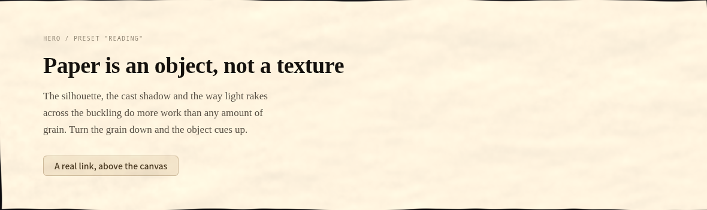
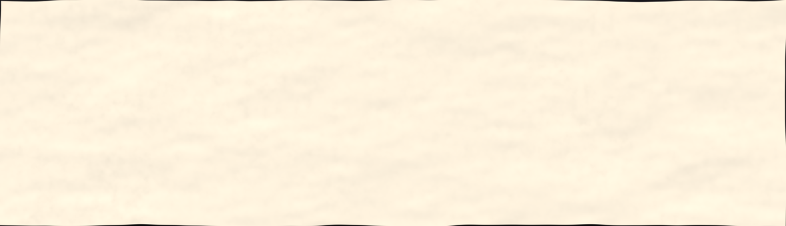
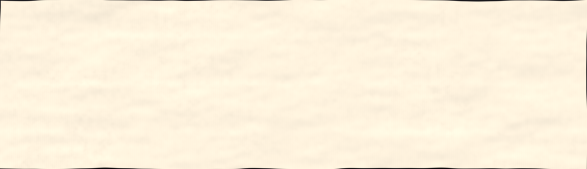
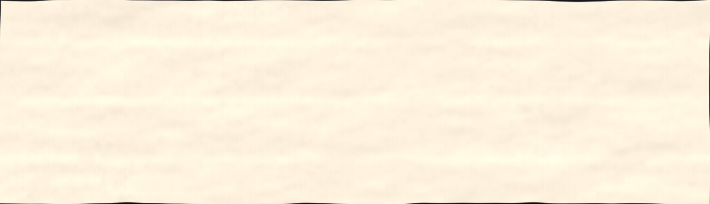
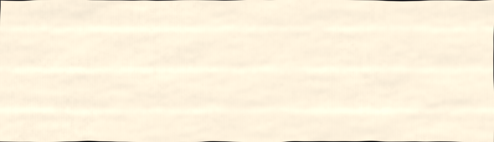
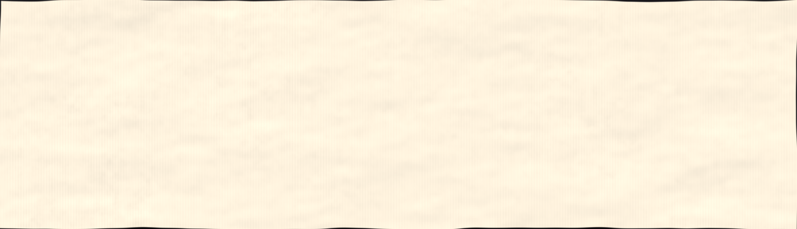
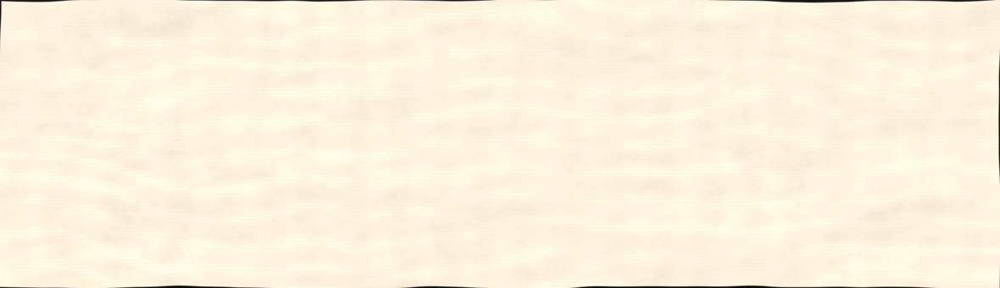

A sheet is formed on a wire mould. The wires leave thinner paper where they pressed: closely spaced laid lines about a millimetre apart from the wires themselves, and sparse perpendicular chain lines every 25–30 mm from the stitching that holds them together. Thinner paper is more translucent, so they read as lightness rather than relief.
paperlab has no layer for this. The old build's two-direction pattern came from the noise hash repeating every 472×189 px, which on a wide element happened to imitate one. When the tiling went, the field's statistics were unchanged (sd 3.77e-3 vs 3.70e-3) but the legible structure was not, and structure is what read as paper.
Same preset, same seed, same size on every strip below. Only mould changes. Tell me a number.






